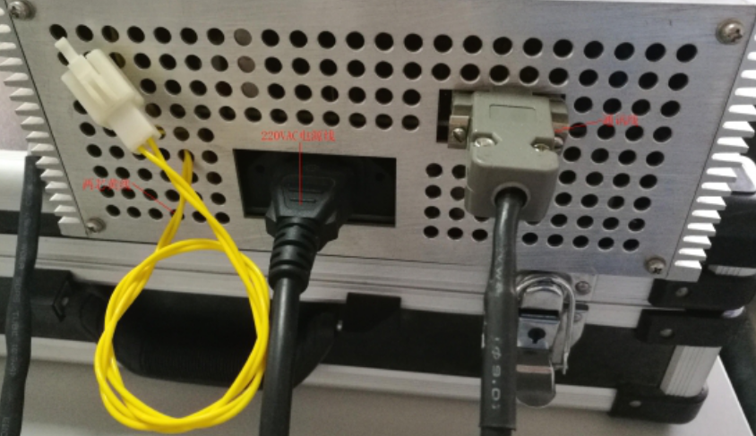

Case 1: it indicates that the radio source communication is abnormal
resolvent:
(1) check whether the input power of the radio source 220V is normal and whether the communication line of the radio source is loose (DB9) connector is loose; as shown in the following figure:

(2) if the radio source occasionally reports abnormal communication but the radio source can be turned on, please check whether the radio source control board program is version 3.0 and need to re burn the program.

Case 2: temperature abnormality
resolvent:
(1) when an abnormal temperature alarm is reported at the start of the machine: (1) check whether the emergency stop button is pressed; (2) check whether the 2-core yellow wire connector on the source control box is connected with the whole machine.
(2) when the temperature abnormal alarm is prompted after using for a period of time: 1. Check whether the air conditioner is refrigerated; 2. Check whether the two connectors on the source oil tank that supply power to the pump and fan are in good contact, and measure whether the voltage of the connector that supplies power to the fan is 24VDC, and whether the voltage of the oil pump connector is 220VAC. The following picture:

(3) if all the above checks are normal, it can be determined that the oil pump is in fault. Feel the surface temperature of the oil tank by hand and replace the oil pump directly
Case 3: the source cannot be opened
resolvent:
(1) there is a green indicator light inside the source control box. After the source is turned on, the voltage is normal, the current value is 0, and the source control board is in fault (product No. 55023825). It is necessary to replace the complete set of source;
(2) there is a green indicator light inside the source control box. After the source is turned on, there is no three-color yellow light of the whole machine flashing. After 4 seconds, it turns into a green light flashing. There is no fault prompt. During the process of turning on the source, the voltage and current are always 0. Check whether the color cable inside the source control box is loose. If the problem cannot be solved by plugging and unplugging again, replace the source control board (product No. 55023825).
(3) if there is no green indicator light inside the source control box, disassemble the source control box and check whether the fuse F1 (6a) is damaged, as shown in the following figure:

If this problem cannot be solved, replace the whole set of radiation source (product No. 53008938).
If you have any questions about the above, you can contact Zhang Feng or Li Li via wechat.